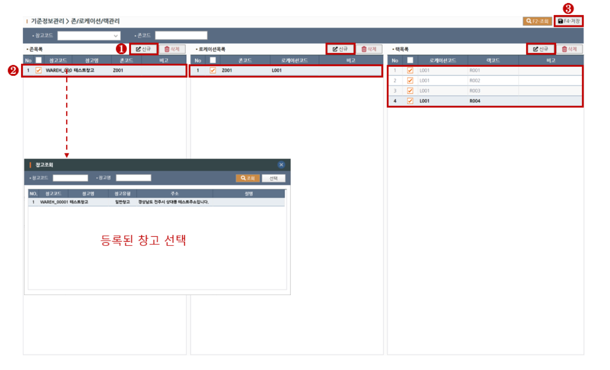
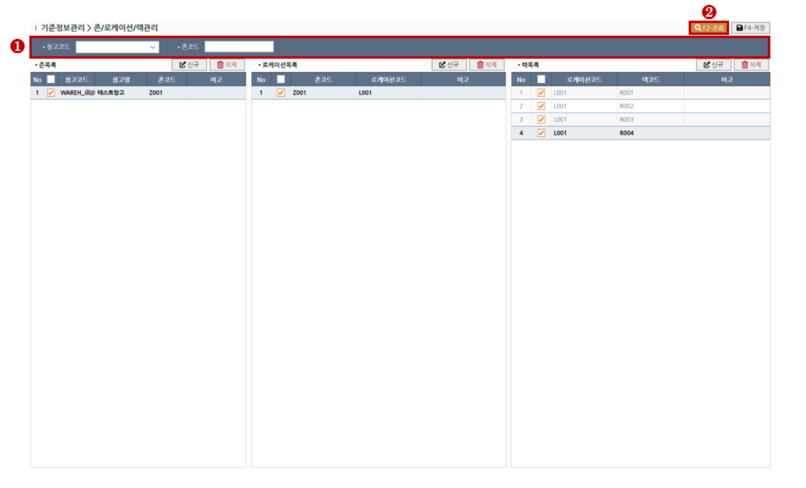
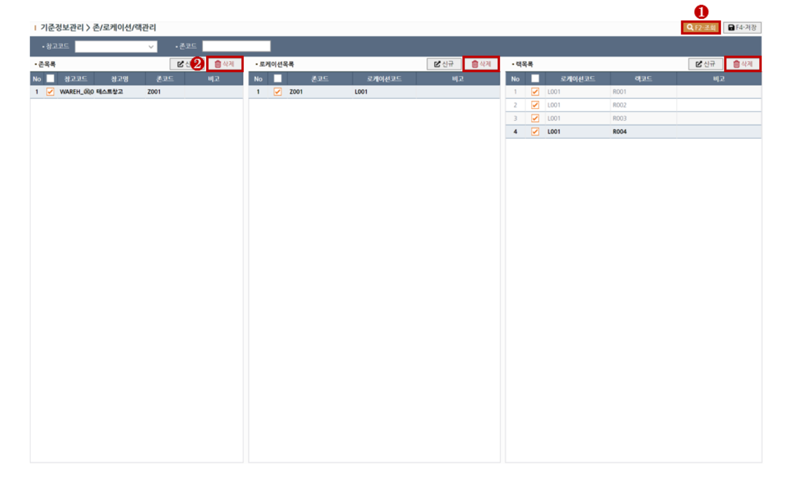

존/로케이션/랙 관리
존/로케이션/랙을 관리하는 화면입니다.
1. 신규 존/로케이션/랙 생성하기
> STEP-1 새로운 존/로케이션/랙 추가를 원하실 경우 각 그리드 상단의 신규 버튼을 클릭하여 행을 추가합니다.
> STEP-2 각 그리드에 추가된 행에 정보를 입력합니다. 존 그리드의 [창고]필드에 돋보기를 선택하여 팝업창에서 기 등록된 창고를 선택할 수 있습니다.
> STEP-3 정보입력을 완료하셨다면 상단의 저장(F4)버튼을 클릭하여 저장합니다.

※ 필드설명1 - 존/로케이션/랙 코드
각 [코드]필드는 중복으로 저장하실 수 없습니다.
2. 조회하기
> STEP-1 조회목록의 필터링을 원하실땐 조회조건을 입력합니다. 창고의 경우 관리자가 아니면 계정에 부여된 창고권한만 나타납니다.
> STEP-2 상단의 조회(F2)버튼을 클릭하여 조회합니다.

3. 삭제하기
> STEP-1 상단의 조회(F2)버튼을 클릭하여 대상을 조회합니다.
> STEP-2 대상을 그리드에서 체크한뒤 그리드 상단의 삭제버튼을 클릭하여 대상을 삭제합니다.
※ 존을 삭제하는 경우 해당 존의 로케이션,랙 정보가 모두 삭제되고 , 로케이션을 삭제하는 경우 해당 로케이션의 랙 정보가 모두 삭제됩니다.
